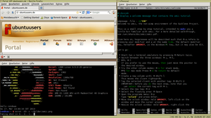

WMII
Dieser Artikel wurde für die folgenden Ubuntu-Versionen getestet:
Ubuntu 16.04 Xenial Xerus
Ubuntu 14.04 Trusty Tahr
Hinweis:
Dieser Artikel bezieht sich auf wmii in Version 3.5 oder neuer. Der Wiki-Artikel zur Version 3.0 befindet sich im Archiv.
Zum Verständnis dieses Artikels sind folgende Seiten hilfreich:
wmii  (window manager improved 2) ist ein leichtgewichtiger Fenstermanager für das X-Window-System. Er unterstützt sowohl konventionelles Fenstermanagement als auch Tiling und Tabbing, basierend auf Layouts. Anstelle mehrerer Arbeitsflächen kommt das Tag-Prinzip zum Einsatz. Abgesehen davon implementiert er einen auf Sockets basierenden Dateiserver, welcher zur Konfiguration und Interaktion mit wmii benutzt wird.
(window manager improved 2) ist ein leichtgewichtiger Fenstermanager für das X-Window-System. Er unterstützt sowohl konventionelles Fenstermanagement als auch Tiling und Tabbing, basierend auf Layouts. Anstelle mehrerer Arbeitsflächen kommt das Tag-Prinzip zum Einsatz. Abgesehen davon implementiert er einen auf Sockets basierenden Dateiserver, welcher zur Konfiguration und Interaktion mit wmii benutzt wird.

Die Idee hinter diesem dateibasierten Ansatz stammt aus dem Betriebssystem Plan9 und lässt sich in der Programmierumgebung Acme wiederfinden. wmii besteht aus dem eigentlichen Fenstermanager und verschiedenen Hilfsprogrammen: wmibar, wmifs, wmimenu, wmikeys, wmiplumb, wmir und wmiwarp.
Der ursprüngliche Entwickler Denis Grelich ist 2010 verstorben. Die letzte Version 3.10 stammt aus dem Jahr 2012.
Installation¶
Der Fenstermanager kann über die offiziellen Paketquellen installiert werden [1]:
wmii (universe)
 mit apturl
mit apturl
Paketliste zum Kopieren:
sudo apt-get install wmii
sudo aptitude install wmii
Bedienung¶
Da wmii komplett tastaturgesteuert ist, kann der Einstieg kompliziert sein. Eine Übersicht der grundlegenden Funktionen:
| Grundlegende Tastenkürzel | |
| Alt + P | Programm öffnen (es öffnet sich in der Statusleiste eine Zeile mit allen installierten Programmen, wenn man nun "fire" eintippt, werden alle Programme angezeigt, die mit "fire" beginnen (z.B. Firefox) |
| Alt + ⇧ + C | Programm schließen |
| Alt + S | Standardmäßig teilt der wmii die Fenster horizontal auf. Diese Taste zeigt ein Fenster groß an, andere Fenster werden in einem kleinen Streifen angezeigt. |
| Alt + M | Die kleinen Streifen der anderen Fenster werden ausgeblendet, um noch mehr Anzeigeraum zur Verfügung zu stellen. |
| Alt + D | Standardeinstellung: Der Bildschirm wird horizontal geteilt und jedes Programm bekommt gleich viel Platz zugewiesen |
| Alt + J | Nächstes Fenster |
| Alt + K | Vorheriges Fenster |
| Alt + ⇧ + 1 ... Alt + ⇧ + 9 | Fenster auf Desktop 1 - 9 schieben |
| Alt + 1 ... Alt + 9 | Auf Desktop 1 - 9 wechseln |
| Alt + A | wmii-Menü aufrufen |
| Esc | Ein Menü verlassen |
| ⏎ | Etwas auswählen |
Wer mit dem geteilten Fenster nicht zurecht kommt bzw. Programme wie GIMP (mehrere Fenster, was durch das Teilen schlecht aussehen würde) nutzt, dem helfen folgende Tastenkombinationen:
| Tastenkombinationen | |
| Alt + ⇧ + | Fenster aus-/einkoppeln |
| Alt + | Zwischen ein- und ausgekoppelter Ebene auswählen. Wenn man mit der Maus über ein aktives Fenster einer Ebene fährt, wird diese automatisch ausgewählt. |
Alt +  + Ziehen + Ziehen | Fenster verschieben |
Alt +  + Ziehen + Ziehen | Fenstergröße ändern |
Konfiguration¶
Die Konfigurationsdateien befinden sich alle in ~/.wmii-3.5. Wenn dieser Ordner noch nicht existiert, kann er per
cp -r /etc/X11/wmii-3.5/* /home/$USER/.wmii-3.5 chown -R $USER:users /home/$USER/.wmii-3.5
oder für ältere Ubuntu Versionen:
cp -r /etc/wmii-3.5/* /home/$USER/.wmii-3.5 chown -R $USER:users /home/$USER/.wmii-3.5
kopiert [3] werden.
Alternativ reicht es evtl. auch – wenn die wmii-Einstellungen für alle Benutzer identisch sein sollen – die Datei /etc/*/wmiirc zu bearbeiten. Wenn jedoch schon eine Konfiguration im Homeverzeichnis existiert, wird dieser der Vorzug gegeben.
Erklärung der Dateien:
wmiirc - Die Tastatur-Kürzel und wesentliche Einstellungen werden hier definiert, seit Version 3.5 auch die Einstellungen zur Statusleiste
welcome - Willkommenstext mit kleiner Einführung
quit - ist zum Herunterfahren da
wmiirc¶
Die Datei dient komplett der Konfiguration. Dazu öffnet man sie [2] und speichert die Änderung wieder ab. Um gesetzte Konfigurationen im laufendem Betrieb zu laden, drückt man Alt + A und wählt wmiirc aus. Wenn man einen Fehler in der wmiirc-Datei gemacht hat, wird sie nicht geladen. Vor Version 3.5 ist dann mitunter der gesamte XServer abgestürzt.
Hinweis:
Am besten immer mal eine Sicherheitskopie machen, da wmii nicht sagt, wo genau die Fehler gemacht wurden.
Eigene Tastenkürzel speichern¶
Am Anfang der Datei werden einige Tasten auf Variablennamen gelegt:
| alternative Tastennamen | |
| Variable | Taste |
| $MODKEY | Alt |
| $UP | K |
| $DOWN | J |
| $LEFT | H |
| $RIGHT | L |
Neu in Version 3.5 ist, dass man die Tasten, welche verwendet werden sollen, nicht mehr vordefinieren muss. Um nun ein neues Kommando zu belegen, sucht man nach der Zeile
# Key Bindings
wo man anschließend im folgenden Format Tastaturbelegungen und Aktionen definieren kann.
Key taste1-taste2-$ALTERNATIVER_tastenname....
Kommandozeilenbefehl (z.B. ein Programmname)
Um Fehler auszuschließen, bitte darauf achten, dass keine Tastenbelegung doppelt vorkommt. Des Weiteren ist die Groß-/Kleinschreibung wichtig (z.B. Print) und es müssen Tabs (
Tab ⇆ ) anstelle von Leerzeichen verwendet werden.
[TAB]Key[Leerzeichen]Taste-Taste.. [TAB][TAB]Befehl
Bildschirmfotos¶
Da es noch keine Funktion für Bildschirmfotos gibt, muss dies erst eingestellt werden. Dazu wird das Programm import aus ImageMagick verwendet, dass evtl. nachinstalliert werden muss. Danach erstellt man die Datei /usr/local/bin/screenshot mit Root-Rechten und fügt folgenden Text ein:
1 2 3 4 5 6 7 8 9 10 11 12 13 14 15 16 17 18 19 20 21 | #!/bin/sh DIR="${HOME}/screenshots" DATE="$(date +%Y%m%d@%H%M%S)" NAME="${DIR}/screenshot-${DATE}.png" LOG="${DIR}/screenshots.log" # Testen, ob das Verzeichnis zum Speichern der Screenshots existiert, andernfalls wird es erstellt if [ ! -d "${DIR}" ]; then mkdir "${DIR}"; fi # Screenshot von einem Fenster if [ "$1" = "win" ]; then import "${NAME}"; fi # Screenshot des gesamten Bildschirms if [ "$1" = "scr" ]; then import -window root "${NAME}"; fi # Screenshot von einem Bereich if [ "$1" = "area" ]; then import "${NAME}"; fi # Hänge den Dateinamen an die Logdatei an echo "${NAME}" >> "${LOG}" |
Die Orte in den Variablen DIR, DATE, NAME, LOG am Anfang können natürlich verändert werden.
Anschließend fügt man zur Datei wmiirc eine Tastenkombination für Druck und Alt + Druck hinzu:
Key Print
screenshot scr
Key $MODKEY-Print
screenshot winNach einem erneuten Laden der Konfiguration kann man mit der Taste
Druck ein Bildschirmfoto erstellen oder mit
Alt +
Druck einen bestimmten Bereich auswählen, von dem ein Bildschirmfoto gemacht werden soll. Standardmäßig werden die Bildschirmfotos dann im Homeverzeichnis unter screenshots gespeichert, wie oben in der Variablen DIR angegeben.
Aussehen ändern¶
Das Aussehen wird am Anfang der Datei über folgende Variablen gesetzt:
WMII_FOCUSCOLORSWMII_NORMCOLORSWMII_FONT
Die Farben werden im Hexadezimalsystem  notiert. Die Farben müssen dann in folgendem Format angegeben werden:
notiert. Die Farben müssen dann in folgendem Format angegeben werden:
WMII_FOCUSCOLORS='#HEXVAL #HEXVAL #HEXVAL'
status()¶
Experten-Info:
Dieser Abschnitt braucht nur gelesen zu werden, wenn man sich bereits mit Befehlen auskennt, da hierauf nicht näher eingegangen wird.
Um die Statusleiste (die Leiste ganz unten, in der u.a. die Zeit angezeigt wird) zu ändern, sucht man sich den Abschnitt nach
# Status Bar Info
der ungefähr so aussehen sollte:
status() {
echo -n $(uptime | sed 's/.*://; s/,//g') '|' $(date)
}Wenn man sich ein bisschen mit Shell-Programmierung auskennt, sollte es nicht schwer sein, hier etwas zu ändern.
Batterieanzeige¶
Möchte man eine Batterieanzeige in der Statusleiste einbinden, sollte man zuerst im Terminal [3] überprüfen, ob das acpi-Modul aktiviert ist.
acpi
Wenn der Ladestand des Akkus ausgegeben wird, funktioniert es. Folgende Befehle können dann eingebaut werden:
echo $(acpi -b | sed 's/%.*//' | sed 's/.*,//') '%' ## gibt Ladestand in % aus echo $(acpi -b | sed 's/ remaining.*//' | sed 's/.*,//') ## gibt die verbleibende Laufzeit aus
In der Praxis sieht das dann ungefähr so aus:
status() {
echo -n $(uptime | sed 's/.*://; s/,//g') '|' $(date) '|' $(acpi -b | sed 's/%.*//' | sed 's/.*,//') '% ' $(acpi -b | sed 's/ remaining.*//' | sed 's/.*,//')
}Einrichtung¶
Um einen Fenstermanager wie wmii komfortabel im Alltag gebrauchen zu können, sind ein paar Schritte notwendig.
Autostart von Prozessen¶
Um Dienste beim Systemstart auszuführen, gibt es mehrere Möglichkeiten. Einfach ist es, die Datei /usr/share/xsessions/wmii.desktop mit einem Editor mit Root-Rechten zu öffnen und die Zeile "exec" folgendermaßen zu modifizieren:
Exec=/home/BENUTZERNAME/wmii_start.sh
Die Datei ~/wmii_start.sh füllt man mit folgendem Inhalt:
#!/bin/bash exec /usr/bin/wmii & Befehl 1 & Befehl 2 & Befehl 3
Wichtig: Nach jedem Befehl muss sich ein "&" am Ende der Zeile befinden, mit Ausnahme der letzten! Eine Beispieldatei mit empfehlenswerten Startprozessen für Ubuntu 12.04:
#!/bin/bash exec /usr/bin/wmii & exec /usr/bin/nm-applet & exec /usr/bin/gnome-settings-daemon & exec /usr/bin/gnome-power-manager & exec /usr/bin/xscreensaver & exec /usr/lib/policykit-1-gnome/polkit-gnome-authentication-agent-1 & exec update-notifier --startup-delay=60
wmii: der Windowmanager selbst
nm-applet: essentiell für eine funktionierende Internetverbindung
gnome-settings-daemon: Dieser Prozess ist dafür verantwortlich, dass das GTK-Thema dargestellt wird, anstatt des "Standard"-Looks, außerdem sorgt der Dienst dafür, dass die GNOME-Tastaturkürzel funktionieren und Notifications angezeigt werden.
gnome-power-manager: Besonders auf Laptops empfehlenswert, regelt die Bildschirmhelligkeit, Standby-Zeiten etc.
xscreensaver: Bildschirmschoner; alternativ können natürlich auch die Startbefehle anderer Bildschirmschoner eingefügt werden. (Anm.: In diesem Fall muss das Paket "xscreensaver" installiert werden)
Authentication-Agent: Bspw. Nautilus benötigt diesen Dienst, um verschlüsselte Laufwerke zu entschlüsseln
Update-Notifier: Sucht nach Updates für Ubuntu
Links¶
wmii
im Arch-WikiWIMP ist tot - Window-Manager WMII
- Artikel LinuxUser 01/2006 First Steps with Awesome Window Manager
- Beschreibung der Autostart-Funktion bei alternativen Fenstermanagern, Blogbeitrag 07/2008Fenstermanager
 Übersichtsartikel
Übersichtsartikel
- Erstellt mit Inyoka
-
 2004 – 2017 ubuntuusers.de • Einige Rechte vorbehalten
2004 – 2017 ubuntuusers.de • Einige Rechte vorbehalten
Lizenz • Kontakt • Datenschutz • Impressum • Serverstatus -
Serverhousing gespendet von